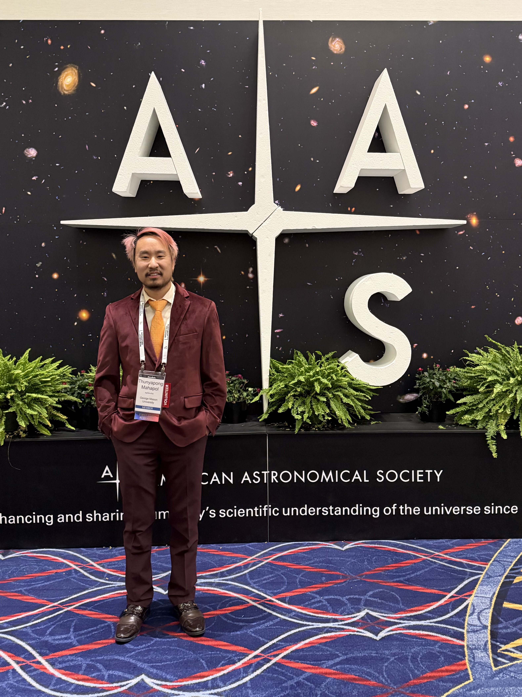
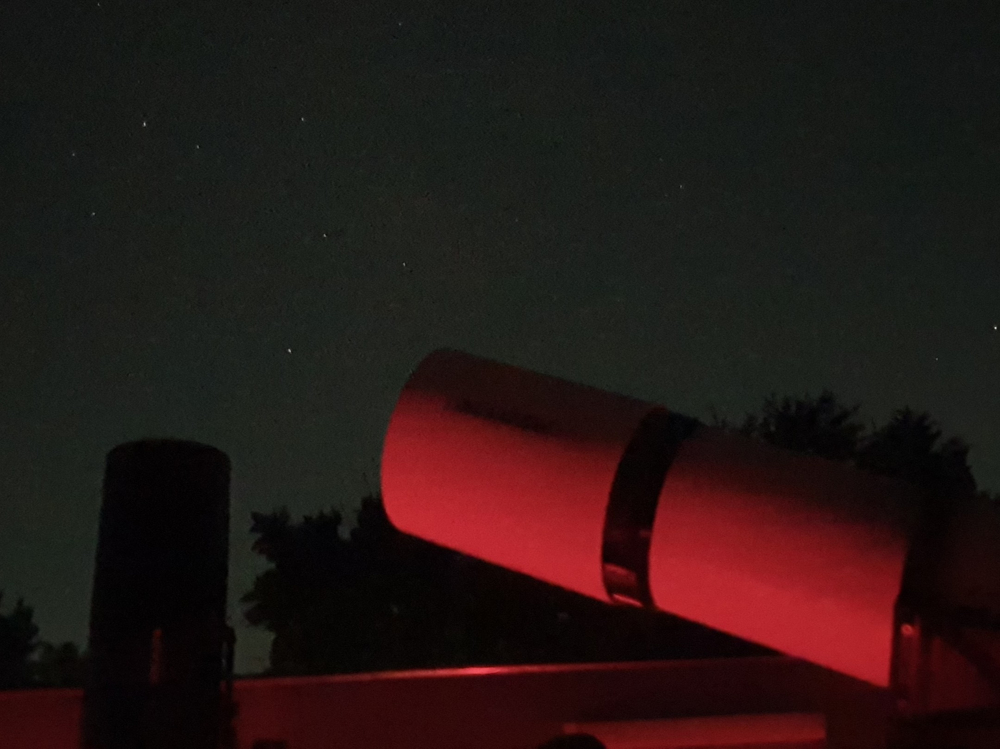
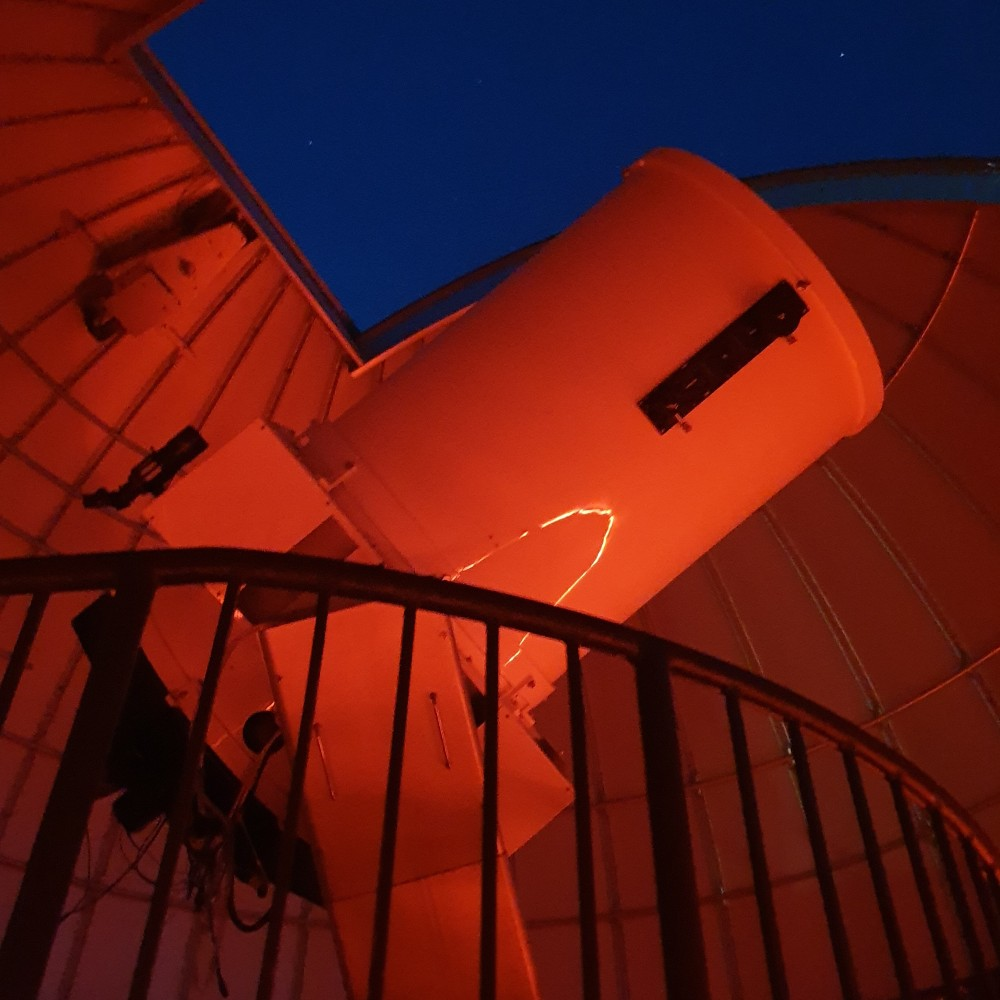

Thunyapong Mahapol
Theoretical Astrophysicist
Theoretical Astrophysicist
Theoretical Astrophysicist
Welcome!
I build models using radiation transport theory, high-energy astrophysics, and computational methods to simulate x-ray emissions from black hole accretion disks and blazars.
I came from Bangkok, Thailand where I studied aerospace engineering at Chulalongkorn University for my undergraduate degree. My senior project focused on the conceptual design of a high-altitude platform and the analysis of its aerodynamical and energy performance. I graduated with second-class honors in 2018 and moved to the United States to pursue graduate studies in physics.
During my Master's program, I explored various topics in physics, including experimental condensed matter physics, and worked at the GMU Observatory as a graduate assistant.
I started my PhD research in Fall 2021 with my advisor, Dr. Peter Becker. My work involved modeling time lags in X-ray variability measured from supermassive black hole accretion disks and blazars. I obtained my PhD degree in Spring 2026.
I am currently an adjunct faculty member at George Mason University. I teach physics and astronomy labs and conduct research in theoretical high-energy astrophysics. Feel free to contact me with any questions or collaboration ideas.

Theoretical Astrophysicist
Advancing knowledge in astrophysics and related fields
See my publications and presentations on Google Scholar.
Connect with me on ResearchGate.
Explore the codes used in my research projects.
Modeling of Fourier time lags production and accretion processes in black hole systems.

Investigating the physics and dynamics of supermassive black holes at the centers of galaxies.
Advanced techniques for analyzing and forecasting time-dependent data in astrophysical contexts.
Modeling the progenitor of long and short gamma-ray bursts.
Mathematica and Python implementations for modeling X-ray time lags generated in an AGN accretion disk. The model simulates X-ray Fourier time lags detected from AGN sources using advection-dominated accretion flow (ADAF), Comptonization, and the diffusion of iron K and L photons ejected from a single injection within the disk, and the transport of iron L seed photons injected in the disk.
Mathematica and Python implementations for the successor model to the single-burst approach. To simulate X-ray Fourier time lags observed from AGN sources, the model utilizes luminous, hot accretion flow (LHAF), Comptonization, and the diffusion and reverberation of iron K and L photons ejected from two, coupled injections within the disk.
Modeling the properties of black holes with non-spherical shapes and their impact on surrounding matter.
Research on the aerodynamic behavior of solar powered high-altitude aircraft.
Developing educational toolkits and outreach initiatives to promote space science and technology.
Theoretical Astrophysicist
List of the courses I have taught:


Theoretical Astrophysicist
Interesting projects I have worked on
Theoretical Astrophysicist
I synthesizes theoretical models with observational data to understand the dynamics of black hole environments.
George Mason University, VA
GPA: 3.95/4.00
Dissertation: Theoretical Fourier-Transformation Models for the Formation of X-Ray Time Lags From Supermassive Black Hole Accretion Disks
George Mason University, VA
Concentration: Standard Physics
GPA: 3.93/4.00
Chulalongkorn University, Bangkok, Thailand
Field of Study: Aerospace Engineering
GPA: 3.27/4.00
Skills I Master
Theoretical Astrophysicist
Let's create something amazing together
226 C, Planetary Hall, George Mason University, Fairfax, VA 22030
tmahapol@gmu.edu